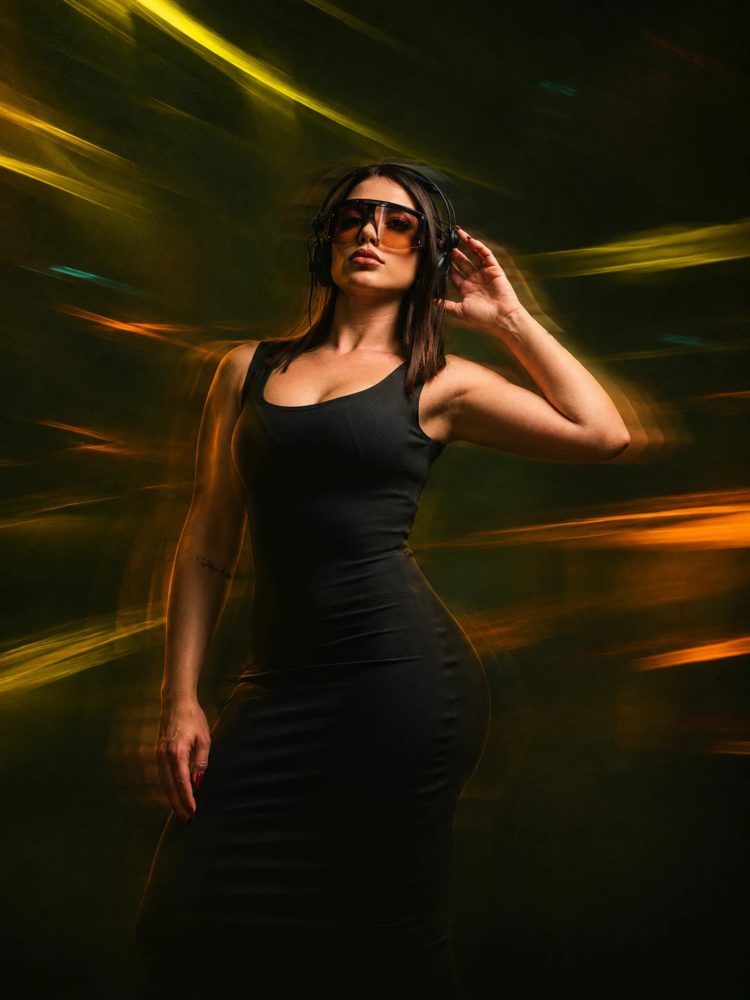
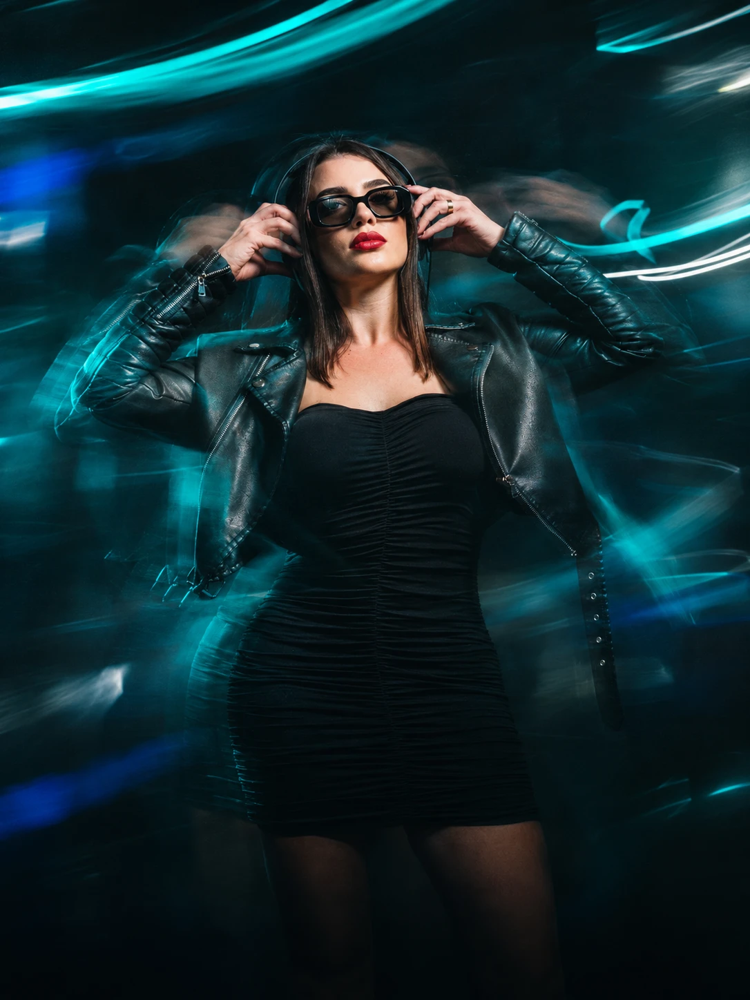
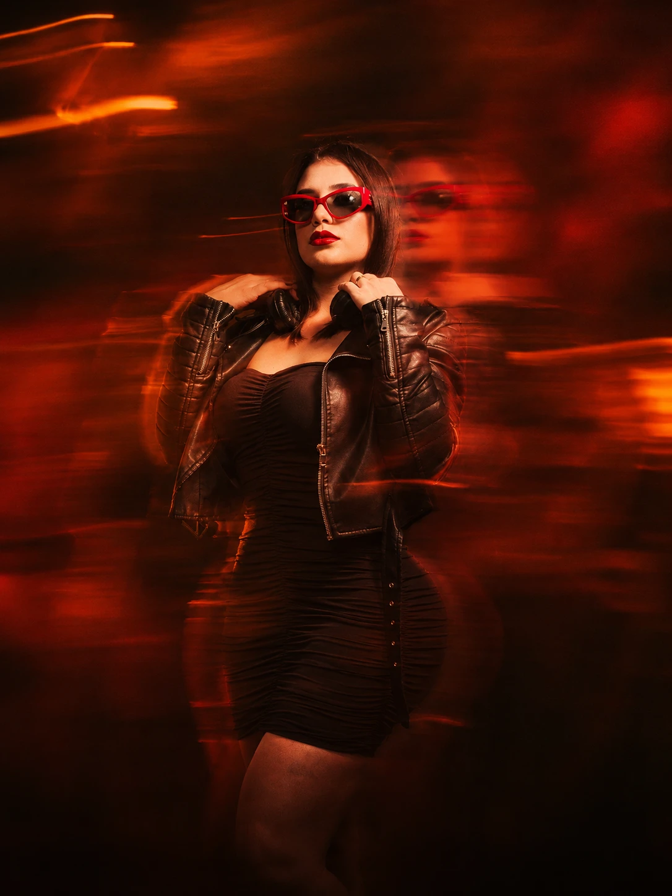
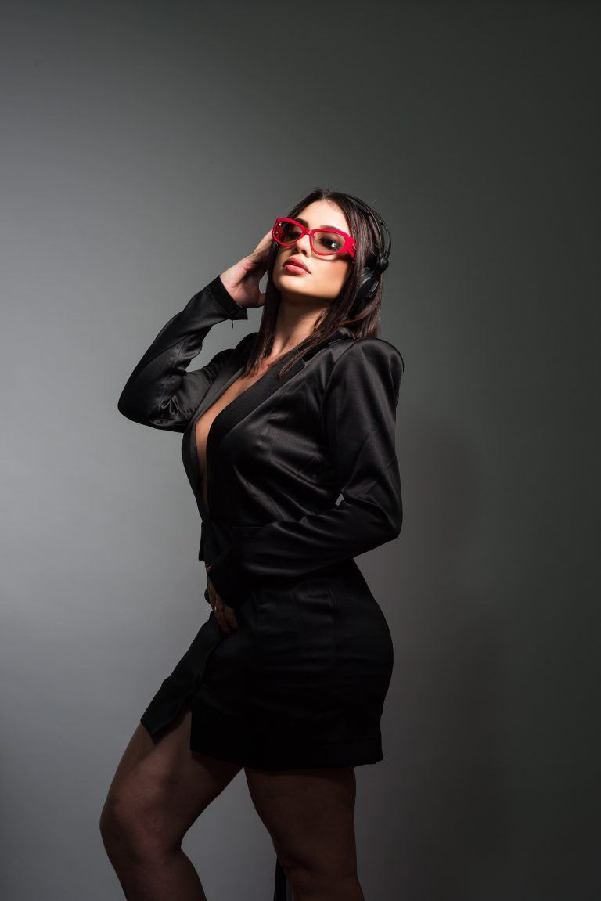
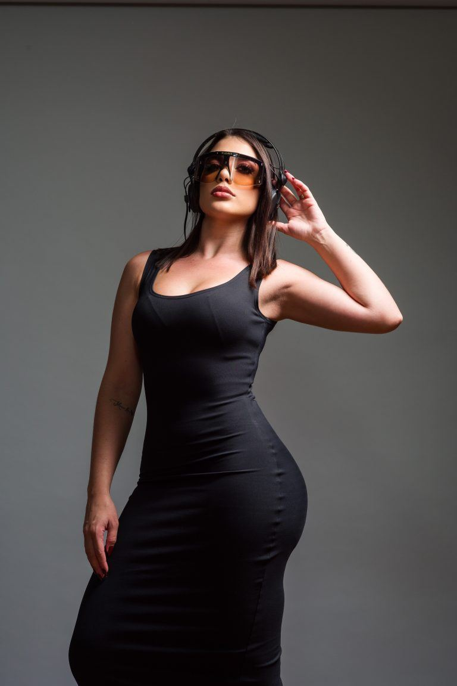

A música me faz sentir viva.
Melodic Techno · disponível para bookings
Ref. abertura · Offform (talent agency)Grade de 3 fotos de sangria total no lugar de uma única foto com moldura. O menu fica sobreposto direto na imagem, sem barra própria. A linha com "2026" e as categorias (clicáveis, levam às seções) substitui o texto de status solto. Canto inferior direito ganhou uma lista numerada, como a "01 WOMEN / 02 MEN" da referência.
Sobre — Bárbara Thomaz
DJ independente,
com identidade
própria no
Melodic Techno.
Sou Bárbara Thomaz, e a música me faz sentir viva. Encontrei no Melodic Techno uma forma de unir energia, intensidade e emoção, e de compartilhar essa conexão com quem está na pista.
Cada set é uma jornada para viver o presente, dançar com liberdade e se deixar levar pelo som. É essa experiência que quero dividir: música que aproxima, desperta sensações e cria momentos que ficam.
01Sets ao vivo
02Produções & remixes
03Bookings
04Data da apresentação · a confirmar
Ref. sobreTrês colunas iguais à seção "ABOUT" da referência: uma frase curta de abertura, o corpo do texto no meio, uma lista numerada do que ela oferece à direita. A foto de IMG_7346 saiu daqui por enquanto (estava solta, quebrando a sequência) — fica pendente decidir onde ela entra. Texto do briefing, ainda para aprovação da Bárbara.
Música — sets e lançamentos

01Spotify BárbaraThomazPerfil de artistaOuvir

02SoundCloud Who IsBárbaraPlaylistOuvir

03YouTube CanalBárbara ThomazSets e vídeosAssistir
Ref. músicaSubiu para logo depois de "Sobre", no lugar onde estava o "Set em destaque" (a pedido do Guto). Cada item é um quadro com foto de estúdio no fundo, no mesmo estilo da galeria — no lugar da lista de texto ou de widgets incorporados (o site atual carrega o player do Spotify, um vídeo do YouTube e o widget do SoundCloud lado a lado, cada um com a cara da própria plataforma). Nenhum player de terceiro carrega aqui — o clique abre a plataforma. "Who Is Bárbara" segue como playlist até confirmarmos o que é.
Set em destaque
Ref. setTirado o painel de dados (Local, Formato, Data, o textinho de descrição) — ficou só a capa com "Assistir no YouTube" no meio, mais limpo. A data da apresentação foi pra seção "Sobre", perto da lista numerada. Ainda não é o frame real do vídeo (é uma capa, não uma miniatura do YouTube). Se um set solo for aprovado, ele assume este lugar.
Em cena — galeria
01Take 01Preto · Retrato
02 Take 02Prateado · Produção
03
Take 02Prateado · Produção
03 Take 03Preto · Produção
04
Take 03Preto · Produção
04 Take 04Prateado · Produção
05
Take 04Prateado · Produção
05 Take 06Preto · Retrato
07
Take 06Preto · Retrato
07 Take 07Preto · Retrato
08
Take 07Preto · Retrato
08 Take 08Preto · Produção
09
Take 08Preto · Produção
09 Take 09Preto · Produção
10
Take 09Preto · Produção
10
Take 01Preto · Retrato
02Take 02Prateado · Produção
03Take 03Preto · Produção
04Take 04Prateado · Produção
05
Take 05Preto · Retrato 06Take 06Preto · Retrato
07Take 07Preto · Retrato
08Take 08Preto · Produção
09Take 09Preto · Produção
10
Take 10Preto · ProduçãoRef. galeria · v3A grade tipo alvenaria não ficou boa — tirei ela. Agora é uma sanfona de ponta a ponta de verdade (sem container centralizado): as fotos ficam lado a lado, estreitas, com uma linha de violeta sólido entre elas; passar o mouse expande a foto e revela o nome, o resto encolhe. No celular (sem hover) vira uma fita que rola com parada em cada foto, já em cor plena. Clicar abre a mesma ampliação de sempre. Categoria por cor do look (preto/dourado/prateado) e por tipo de enquadramento (retrato/produção) — os dois lidos direto da própria foto, nada inventado. Tirei as duas fotos que já apareciam na abertura (de costas e cetim dourado de frente) — aqui fica só o que ainda não foi mostrado.
Bookings e press kit
Leve essa experiência para o seu evento.
Para bookings e informações sobre apresentações, entre em contato.
- (19) 98900-5660
Ref. bookingsMesma grade de 3 colunas da seção "Sobre", agora para contato: a chamada, os dados e as redes lado a lado — no lugar de empilhar tudo numa faixa só. O WhatsApp vem do site atual (lá o link está sem o 55; aqui já corrigido).